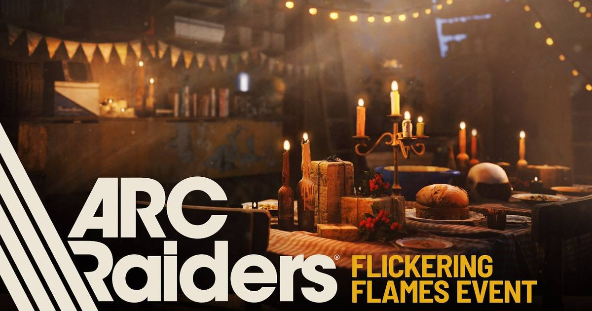

Flickering Flames guide: every resource and reward
ARC Raiders' Flickering Flames project is live with update 2.7.0 — three stages, a dinner to prep for Celeste, and a much lighter grind than last winter.

Disclosure: this post contains affiliate links. I earn a commission on qualifying purchases.
# Flickering Flames guide: every resource and reward
Flickering Flames is live in ARC Raiders as part of update 2.7.0, running November 24 to December 28. The project is split into two parts, and only the first is open now — the second unlocks December 8.
The premise is a gentler one than last winter's version. You're helping Celeste in Speranza prepare a dinner that brings all four contradas together for the celebration of light. Part one has three stages: two material donations, then a choice between two gameplay objectives. Finish all three and the first part is done.
Part 1 at a glance
1. Banquet Basics: 10 Durable Cloth, 10 Battery, 5 Pop Trigger, 5 Candleberries; Il Toro IV shotgun, Shotgun Choke II, Grappling Hook, Harmonica
2. Lights and Tableware: 5 Advanced Electrical Components, 2 Silver Teaspoon Set, 5 Firefly Burner, 10 Candleberries; Anvil IV, Extended Barrel II, Tether Launcher, Mountaineer's Detector
3. Clear The Way: Heal 3 unique Raiders outside your squad or deal 800 damage to fire-wielding ARC; Canto IV, Compensator III, Angled Grip III, Padded Stock
Each stage's weapon also comes with a Verdigris stencil, per the project tracker data.
Stage 1: Banquet Basics
The opening stage asks for the most basic materials of the three. Durable Cloth and Batteries turn up in Medical and Residential loot areas, so a couple of normal raids should cover most of it. Turn everything in and you walk away with an Il Toro IV shotgun and a Shotgun Choke II to go on it, plus a Grappling Hook and a Harmonica.
Stage 2: Lights and Tableware
The second stage steps up to rarer materials — Advanced Electrical Components and Silver Teaspoon Sets are the ones to watch for — but the ask is still small. The payoff is an Anvil IV, an Extended Barrel II, a Tether Launcher, and a Mountaineer's Detector.
Across the two donation stages, the berry total is 15 — five in the first, ten in the second.
Stage 3: Clear The Way
No scavenging for the finale. Instead, pick one of two objectives: heal three unique Raiders outside your squad, or deal 800 damage to fire-wielding ARC — Vaporizers, Fireflies, and Fireballs. If you're hunting the damage route, Blue Gate and Riven Tides both regularly spawn Vaporizers and Fireflies. Completing it pays out a Canto IV, a Compensator III, an Angled Grip III, and a Padded Stock.
Where to find Candleberries
Candleberries are the event-specific resource, and they're the only material that shows up in both donation stages. Look for red Candleberry bushes during Cold Snap, and check Raider Caches and nature-related containers along your route. The best farming spots:
• Dam Battlegrounds — Swamp and Hydroponic Dome areas
• Buried City — parks and green spaces, including Marano Park
• Spaceport — North Trench and the natural areas around Container Storage and East Plains Warehouse
How this year compares to last winter
Returning players will notice the difference immediately. Last winter's Flickering Flames was a five-stage project that demanded 260 Candleberries and a 15,000-Merit grind. This year's version asks for a fraction of that across three stages, with the reward track replaced by direct weapon and mod payouts. It's a shorter, sharper event — which also means less reason to put it off.
Part 2 and the Nessuno Set
Part two unlocks December 8 and brings additional cosmetic rewards. One date note: December 28 is the end date shown by event trackers, not a deadline officially confirmed by Embark, and at least one community wiki lists December 27 — so finishing by the 27th is the safe play.
The Nessuno Set — outfit, backpack, and backpack charm — is separate from the project itself. It arrives as an in-game store offering alongside the update, not as a project reward.
Watch
Source: Flickering Flames: New Event | ARC Raiders — ARC Raiders (official channel). The official trailer for update 2.7.0, showing Celeste's dinner setup in Speranza and the Nessuno Set.
Sources
• ARC Raiders Flickering Flames Project guide: All required resources and rewards — Dot Esports
• Arc Raiders 2.7.0 Update Adds New Flickering Flames Project and Cosmetics — TalkEsport
• Arc Raiders Flickering Flame Event - Complete Guide — Boosting Factory
Gear up: Razer — mice, keyboards, headsets and laptops.